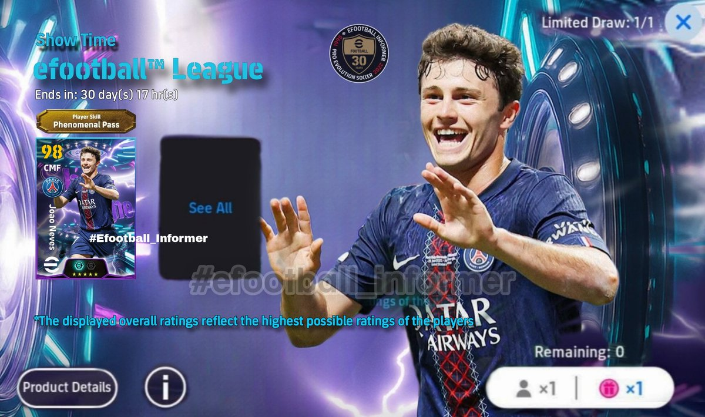

Luka Megurine 03（互fo
@LMegurine03
估计和我没啥关系，这次打联赛好不容易上到4级，但是总是赢不了，也有网络的原因，也有匹配机制总匹配到特别强的对手，再加上水平本身也不算特别高，就一直往下掉，已经掉回到6了，搞的也是一点耐心都没有了，还是靠常规的攒金币来抽吧

EFOOTBALL INFORMER
@EFOOT_INFORMER
-PREDICTION-
Upcoming 'efootball™ League' show time player 💬
• JOAO NEVES
↪ Phenomenal Pass
↪ 98 to 103 boost
↪ 104 with special manager
Follow for more ⏳
#efoofballinformer #efootball #joaoneves https://t.co/Xu09lQF5V1